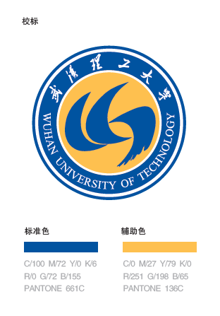

MASTER · 硕士
武汉大学
硕士研究生
GPA3.4 / 4.0
让数据从“到了”，走向可信、可用。
我参与企业数据平台建设，聚焦数据接入状态、业务找数与受控取数，以及可回溯的天气数据产品。以下三个项目分别呈现业务问题、产品判断和可验证的成果。
yuxing_cosmos@163.com从本科到硕士的学习经历，支撑我用结构化方式理解问题与数据。
硕士研究生

本科学历
点“查看详情”了解产品决策；有完整交互页面的项目，可直接点“体验 Demo”。
不同项目的共同点，是先厘清事实、状态和使用边界，再决定界面该如何表达。